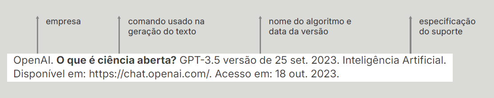
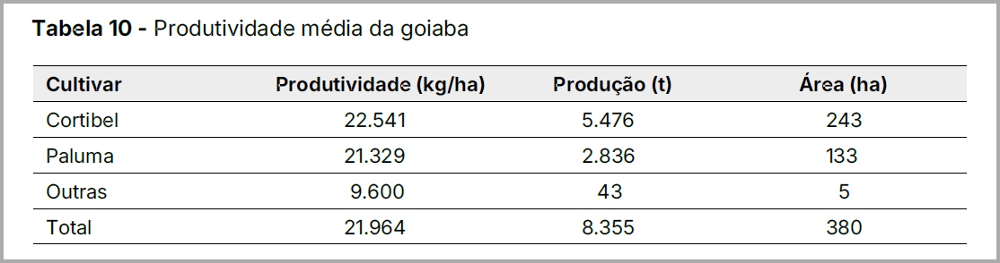

8.1 O QUE É A INTELIGÊNCIA ARTIFICIAL (IA)
Os estudos sobre Inteligência Artificial (IA) são bem antigos. Eles começaram antes da década de 1960, com o uso do aprendizado de máquina (machine learning) e do processamento de linguagem para analisar padrões em grandes volumes de dados. Atualmente, a IA está presente em celulares, nas redes sociais, em aplicativos e nos algoritmos que usamos constantemente. Trata-se de um conjunto de tecnologias da ciência da computação que se concentra no desenvolvimento de sistemas e algoritmos capazes de realizar tarefas que normalmente exigem a inteligência humana. Elas permitem executar funções avançadas, como compreender e traduzir idiomas falados e escritos, analisar dados, fazer recomendações e dar informações, entre outras. Uma das abordagens mais inovadoras da IA é o aprendizado profundo (deep learning). Essa técnica utiliza redes neurais artificiais complexas, projetadas de maneira semelhante ao cérebro humano.
Quando falamos sobre IA, frequentemente nos referimos a “dados de treinamento”, ou seja, o conjunto de informações utilizadas para “ensinar” um algoritmo a reconhecer padrões, fazer previsões e tomar decisões. É importante lembrar que a memória dos sistemas de IA é limitada, mas melhora com o tempo à medida que é alimentada com novos dados. O aprendizado de máquina (machine learning) usa algoritmos para treinar esses sistemas, permitindo que eles gerem resultados e executem tarefas complexas de forma eficiente e autônoma ao longo do tempo.
O termo “Inteligência Artificial” nunca foi tão debatido quanto nos últimos anos. Desde o fim de 2022, o uso do ChatGPT se popularizou e vem crescendo em ritmo bastante acelerado. Esse crescimento tem causado preocupação em diversos setores, especialmente no meio científico sobre o uso indevido dessa tecnologia nas publicações técnico-científicas, por exemplo. É fundamental analisar todas as questões envolvidas com cuidado para que se possa aproveitar os benefícios dessa ferramenta, que não só gera, mas também cria textos, imagens, vídeos, sons e muito mais. Nesse contexto, a grande preocupação, no momento, é com o uso da Inteligência Artificial Generativa (GenAI), demandando reflexões sobre direitos autorais e sobre os limites éticos, principalmente na produção de publicações de caráter científico.
Para isso, precisamos considerar alguns princípios. Um deles é preservar o controle humano sobre as informações geradas, garantindo a centralidade dos indivíduos. Isso significa que a IA deve ser usada de forma benéfica à sociedade, respeitando a privacidade de dados, sobretudo em atividades que envolvam contratos, por meio de parcerias para o desenvolvimento e a transferência de tecnologias.
Para certas associações científicas e editoras, as ferramentas de IA devem ser empregadas apenas para o aperfeiçoamento de texto, tanto na produção original como em língua estrangeira. No entanto, na edição de produtos editoriais, vale ressaltar que é fundamental haver supervisão, revisão e edição humanas. Isso significa que o uso da IA deve ser limitado a aperfeiçoar o conteúdo original, sem gerar novas ideias. A IA não deve, em nenhuma circunstância, substituir tarefas essenciais de autoria, como produção de reflexões ou condução de pesquisas (Elsevier, 2023b). É muito importante que sempre haja humanos no processo (humans in the loop). Os autores devem estar cientes de que assumem a responsabilidade integral pelo conteúdo final e pelo texto enviado para publicação. Isso implica a necessidade de informar se utilizaram GenAIs para esse fim.
Entre os benefícios do uso da IA nas publicações técnico-científicas, destacam-se:
- Automação: a IA pode automatizar processos de trabalho ou trabalhar de forma independente e autônoma de uma equipe humana, quando houver padrões pré-estabelecidos;
- Redução de erros humanos: a IA pode eliminar erros humanos no processamento de dados, na análise e na execução de atividades que usam a automação e os algoritmos que sempre seguem os mesmos processos;
- Execução de tarefas repetitivas: a IA pode ser usada para executar tarefas repetitivas, liberando as pessoas para trabalhar em problemas que exijam maior capacidade cognitiva;
- Rapidez e precisão: a IA pode processar um grande volume de informações com mais rapidez e precisão do que um humano, encontrando padrões e descobrindo relações entre dados que os humanos demorariam mais para identificar;
- Disponibilidade “ilimitada”: a IA não está sujeita a horários, a paralisações ou outras limitações humanas;
- Aceleração da pesquisa e do desenvolvimento: a IA tem capacidade de sistematizar e analisar grandes quantidades de dados rapidamente, impulsionando o desenvolvimento em pesquisa e inovação.
No entanto, apesar dos potenciais benefícios da IA, a geração de textos por essas ferramentas é baseada na probabilidade de uso de palavras por humanos. Isso pode resultar em variações e imprecisões nas respostas, conhecidas como “alucinações”, que geram modelos ao selecionar combinações sintaticamente viáveis, mas incorretas em relação aos fatos. Além disso, questões referentes a plágio e uso de conteúdos gerados por esses modelos levantam preocupações éticas, sobre autoria e fontes, abalando os pilares fundamentais das normas científicas.
Quanto à divulgação dos resultados das pesquisas, desenvolvimento dos trabalhos ou inovações, apenas os originais não gerados por GenAIs devem ser utilizados, conforme orientações da Editora Incaper. No entanto, materiais em que a IA é parte integrante da pesquisa e esteja no seu delineamento, seja nos métodos utilizados ou no seu planejamento, o uso de imagens ou vídeos gerados por GenAIs é permitido, desde que seja devidamente citada.
8.2 AUTORIA DE PUBLICAÇÕES COM IA
Conforme já exposto no capítulo 6 sobre direitos autorais, o ordenamento jurídico brasileiro define o autor como o detentor de direitos morais, na qualidade de pessoa física, e prevê algumas exceções que atribuem autoria a pessoas jurídicas. Consequentemente, os autores, representados pelo Autor Correspondente, são responsáveis por todo o conteúdo submetido e aprovado para a publicação no Incaper. Também devem ser transparentes sobre o uso de ferramentas de IA na preparação do original. (Cambridge, 2023; COPE, 2023; Elsevier, 2023b; ICMJE, 2023; Oxford, 2023; Wiley, 2023; Zielinski et al., 2024).
O autor de uma publicação técnico-científica assume a responsabilidade pelo conteúdo, o que inclui a precisão dos dados, a originalidade do trabalho e o cumprimento das diretrizes éticas, assumindo, assim, responsabilidades legais e éticas. A IA, por ser uma ferramenta, executa tarefas com base em algoritmos programados e treinados com dados, mas não tem a capacidade de gerar ideias originais, realizar reflexões críticas, promover a inovação ou fazer julgamentos criativos de forma autônoma. Além disso, as IAs não podem assumir a responsabilidade moral ou legal pela originalidade, precisão e integridade dos resultados publicados.
Portanto, é essencial que a utilização de IA, quando houver, seja claramente divulgada na seção “Material e Métodos” ou “Agradecimentos”, bem como a informação da fonte no caso de ilustrações ou imagens dos originais a serem submetidos. É necessário também especificar quando e como essas ferramentas foram utilizadas.
8.3 USO DE IA EM ATIVIDADES EDITORIAIS
A IA não substitui a redação e a revisão humana, especialmente na interpretação crítica do conteúdo científico. No entanto, ela acelera processos, melhora a qualidade técnica dos textos e ajuda a reduzir erros comuns. Essa tecnologia pode contribuir significativamente para a precisão, eficiência e consistência dos textos no processo de editoração.
8.3.1 Possibilidades de uso de IA pela Coordenação Editorial
Nas práticas editoriais, a IA pode ser usada nas seguintes situações:
1Automatizar tarefas administrativas, como o recebimento de propostas de publicações submetidas e elaboração de mensagens.
2Verificar se os originais recebidos estão de acordo com os principais temas do veículo de publicação.
3Assegurar que os originais submetidos estejam de acordo com os padrões da publicação.
4Verificar se há plágio e identificar possíveis conteúdos gerados por IA.
5Identificar candidatos qualificados para atuarem na avaliação de propostas de publicação.
Em todas essas situações, no entanto, é importante ressaltar que a supervisão humana é sempre necessária.
8.3.2 Utilização de IA na produção de originais
As ferramentas de IA, tais como o ChatGPT, não substituem a criação humana, atuando apenas como recursos auxiliares na produção de originais, mas devem ser utilizadas de forma ética, transparente e com discernimento.
Para citar informações obtidas por IA em uma publicação, recomenda-se seguir as seguintes orientações:
- informar o nome da organização detentora da ferramenta de IA;
- incluir, no texto ou em nota de rodapé, o comando que foi dado à ferramenta de IA;
- informar o nome da ferramenta de IA utilizada e a sua versão;
- informar a data em que a ferramenta de IA foi utilizada;
- fornecer uma descrição clara do uso da ferramenta de IA como fonte;
- incluir, se disponível, o link da ferramenta de IA utilizada.
Exemplo:

Fonte: Sa (2024).
Ao usar IA como ferramenta auxiliar para elaboração de textos, há o risco de um mesmo conteúdo ser apresentado para diferentes consultas. Com isso, os autores também podem ser acusados de plágio ao utilizarem esse texto. Recomenda-se que os autores façam uma revisão cuidadosa do conteúdo ao optarem pela utilização de uma ferramenta de IA para a produção do texto.
A Editora Incaper e a Coordenação Editorial reconhecem o crescente uso da IA e mantêm uma abordagem cuidadosa e proativa em sua aplicação nas publicações. Como ferramenta, a IA pode trazer benefícios significativos nas diferentes etapas de automação de processos editoriais. No entanto, deve sempre garantir a originalidade, a responsabilidade ética e a integridade técnico-científica, com a supervisão humana, fundamental para preservar a qualidade e a credibilidade das publicações do Incaper.
8.3.2.1 Orientações para o uso de IA em publicações a serem submetidas à Coordenação Editorial
A IA pode ser uma importante aliada na avaliação de originais submetidos para publicações e nas demais atividades da Coordenação Editorial. No entanto, é essencial compreender e adotar algumas orientações, como:
- Transparência: quando essas ferramentas automatizadas forem utilizadas, os autores devem declarar o seu uso e indicá-lo claramente na seção de metodologia e nas fontes de figuras, tabelas e quadros das publicações. A não declaração constitui infração ética, levando à recusa do original para publicação.
- Proteção de Dados: é preciso avaliar quais informações podem ser manipuladas por ferramentas de IA. Dados sensíveis, como informações pessoais e confidenciais (Lei nº 13.709/2018), ou inéditos não devem ser compartilhados.
- Autoria: a IA generativa não pode ser considerada autora de publicações no Incaper. O autor humano é o único responsável pela integridade das informações produzidas com o auxílio dessa ferramenta.
- Vieses: as plataformas de IA podem reproduzir desinformação, preconceitos e discriminação. É preciso avaliar com cuidado se os dados são corretos, precisos e representativos.
8.3.2.2 Como referenciar imagens geradas por IA
Quando utilizamos figuras, ilustrações ou qualquer tipo de imagem em publicações, é indispensável numerar e descrever cada imagem, explicando o seu significado na publicação e citando a fonte, conforme recomendado pela NBR 14724/2011 ou edições posteriores.
No caso de uso de imagens geradas por IA em publicações, a indicação da fonte segue as mesmas diretrizes básicas utilizadas para qualquer outra imagem (seção 5.3.7 deste manual). Além disso, ainda que o comando (prompt) de criação da imagem tenha sido dado pelo autor da publicação, é necessário citar a fonte e a ferramenta usada para dar os créditos devidos e também porque os resultados gerados por IA podem ser diferentes.
Ao utilizar essas imagens criadas por IA, há algumas perguntas que devem ser feitas, destacando as considerações éticas associadas ao uso dessas ferramentas. Mesmo que o conteúdo dessa publicação seja apresentado por diferentes mídias e, posteriormente disponibilizado, o rigor deve ser o mesmo. O autor deve perguntar:
- Há alguma imagem real que possa substituí-la?
- O quanto essa imagem é importante para o trabalho?
- A imagem se aplica ao contexto do trabalho?
- Estou sendo transparente quanto às informações da imagem?
Orientações gerais para referenciar imagens geradas por IA
- Na legenda e na fonte de figuras:
Incluir informações sobre a descrição da imagem e da ferramenta de IA ou o algoritmo utilizado.
Fonte: OpenAI. Imagem gerada por ChatGPT (GPT-5) versão de 7 ago. 2025. Inteligência Artificial. Disponível em: https://chat.openai.com/. Acesso em: 14 out. 2025.
- No texto:
Ao usar IA como ferramenta auxiliar na elaboração de texto ou imagens em uma publicação, é necessário mencionar entre parênteses como esse conteúdo foi gerado. Essa informação deve ser dada seguindo a mesma orientação para citações convencionais no texto.
Exemplo: (conteúdo gerado por [nome da ferramenta de IA ou do algoritmo utilizado]).
- No título e na fonte de tabelas e quadros
Incluir título com a descrição da tabela ou do quadro na parte superior. Na parte inferior, incluir a fonte com os detalhes sobre a ferramenta de IA ou o algoritmo utilizado.

Fonte: OpenAI. Tabela gerada por ChatGPT (GPT-5) versão de 7 ago. 2025. Inteligência Artificial. Disponível em: https://chat.openai.com/. Acesso em: 4 nov. 2025.
Se a ferramenta de IA ou o algoritmo usado no original já tiverem sido publicados, recomenda-se incluir a citação e a fonte bibliográfica na lista de referências. Isso permite informar com mais precisão o contexto em que a IA foi utilizada.
8.3.3 Avaliação dos originais pelos consultores ad hoc
O procedimento padrão para revisão de um trabalho científico submetido para publicação é conhecido como revisão por pares (peer review). Nessa abordagem, o editor designa geralmente três especialistas para avaliar o conteúdo apresentado pelos autores em um original. No entanto, a avaliação por pares não é perfeita, já que o tempo e a experiência são os melhores mecanismos de controle de qualidade das publicações, separando naturalmente o que é válido e o que não é.
A literatura técnico-científica e os debates públicos nas diversas mídias são muitas vezes comprometidos por um grande número de pesquisas de baixa qualidade, algumas até fraudulentas. Essas fontes apresentam evidências e conclusões que, na realidade, são pouco confiáveis, o que abre brechas para a desinformação científica e a propagação de fake news. Só porque um estudo foi publicado, não significa, automaticamente, que ele esteja correto, que ele tenha sido produzido de maneira ética ou que ele tenha passado por uma consultoria ad hoc criteriosa antes de ser publicado.
Cabe, assim, aos consultores ad hoc avaliar se a metodologia do trabalho é adequada, se os experimentos necessários foram conduzidos de forma satisfatória e se os resultados obtidos sustentam as conclusões apresentadas. Esses consultores podem então requisitar dados adicionais aos autores, sugerir novos experimentos, solicitar esclarecimentos e recomendar que o Coordenador Editorial aceite ou não o original apresentado.
8.3.3.1 Verificação de texto por IA
É possível utilizar ferramentas automatizadas para analisar e avaliar textos. Esses recursos tecnológicos podem ser utilizados para detectar plágio, analisar textos do ponto de vista da gramática, ortografia, estilo e até mesmo em relação à coesão e coerência do conteúdo. Esses sistemas utilizam IA e processamento de linguagem, contribuindo para a produção e aumento da qualidade da escrita.
8.3.3.2 Detecção por IA
É cada vez mais difícil saber se um conteúdo foi produzido por um humano ou por um robô. No entanto, já existem ferramentas de detecção de IA, que analisam o texto em busca de padrões que são típicos de escritos gerados por soluções automatizadas. Outros softwares podem ser utilizados como ferramentas mais específicas, detectando inclusive características próprias de acordo com o texto proposto e a linha editorial da publicação.
Pesquisas indicam que detectores de IA tendem a considerar incorretamente textos feitos por autores não nativos em inglês como se fossem gerados por alguma ferramenta automatizada (Liang et al., 2023). E, ao contrário do que afirmam a divulgação comercial desses produtos, atualmente, nenhum detector de IA é suficientemente confiável para ser usado de forma irrestrita. Apesar de vários detectores indicarem a probabilidade de um conteúdo ter sido gerado por IA, esses valores são apenas estimativas, exibindo frequentemente uma margem de erro significativa.
8.3.4 Uso de IA na editoração das publicações
Assim como nas demais etapas editoriais, o uso de tecnologias de IA nas atividades desenvolvidas na editoração de publicações tem sido crescente. Por isso, é crucial normatizar o seu uso no contexto da prática editorial, uma vez que a Editora Incaper entende que essas ferramentas podem ser utilizadas de forma auxiliar, mas não na substituição do processo criativo humano.
8.3.4.1 Revisão textual
A IA pode ser uma ferramenta importante para apoiar o trabalho de revisão textual, como identificar inconsistências gramaticais, sugerir melhorias na estruturação das frases, parágrafos e na coesão do texto, por exemplo. No entanto, é importante garantir que a revisão humana seja realizada, com a IA presente apenas como assistente no processo.
8.3.4.2 Design editorial
As atividades de design editorial podem se beneficiar do uso da IA, especialmente como ferramenta auxiliar na criação de layouts, na adaptação a diferentes formatos, automação de tarefas repetitivas, como o processo de organização de textos e imagens. Assim, a IA pode facilitar a produção, mas sem substituir a criatividade e a sensibilidade humanas, que são fundamentais para o resultado final.